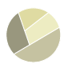
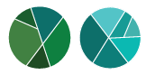

Bruno Afonso Minghini
WDD 330 - Chamber Site Plan

WDD 330 - Chamber Site Plan
Chamber of Morato City
Our Chamber of Business Community website serves as the central hub and online resource for our vibrant business community. Our purpose is to foster collaboration, growth, and prosperity among our local businesses by providing a dynamic digital platform that connects, informs, and empowers our members.
Whats events will be support with organization, investment and find spounsor of chamber or Morato City
Where will find informations about create partners and collaboration bussiness
Whats the oppotunitises months, to offer solutions
The color schema that will create, find create connection of flag and coat of arms of city and other meaning that created engagment
Blue: represents the clear sky, present in this region
 Champagne: present in the crown,representation of Portuguese colonization
 Green: represents eucalyptus branches and corn stalks, where their cultivation was the purpose of creating the city
Brown: (also removed from the city flag) and brown were also removed of flag and
Lilac: was chosen because it remembers the struggle of women in entrepreneurship.
The chosen mainly Open Sans is similar Segor UI font is of the slogan that is on the Banner with the word “MORATO”. It was chosen with the aim of reinforcing the solidity of the brand. The font also used in the slogan, Segoe UI, was used in the italicized version, resembling a handwritten text, with the purpose of reinforcing the chamber's personal commitment to its readers
The chosen family find bring same descontraction and design more relax